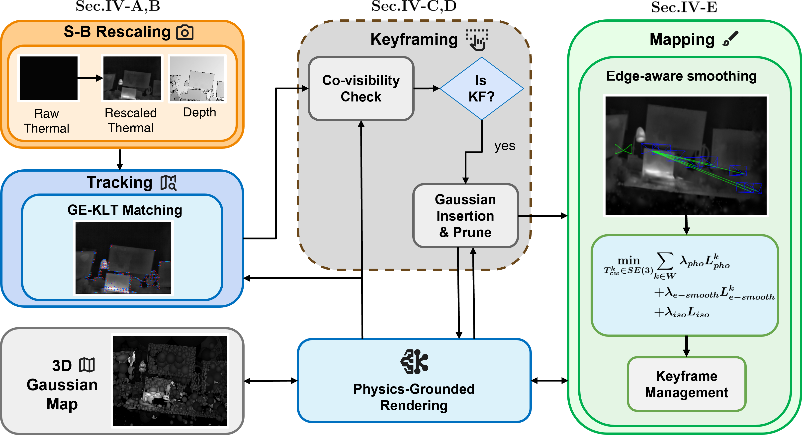
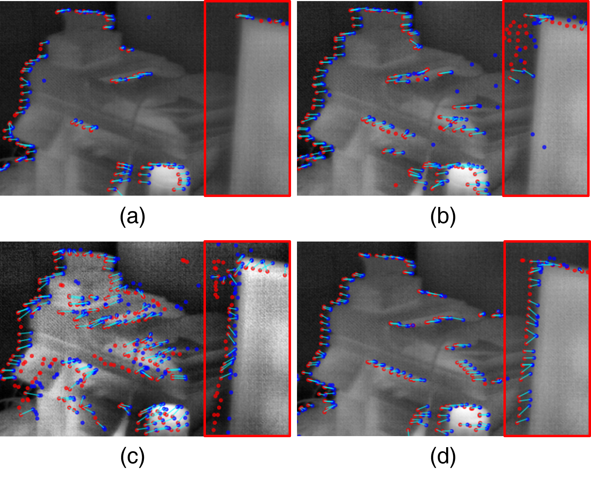
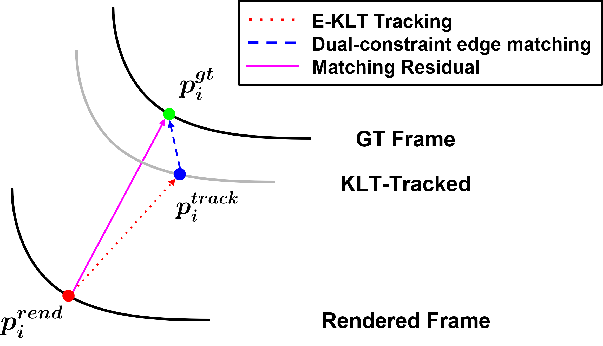
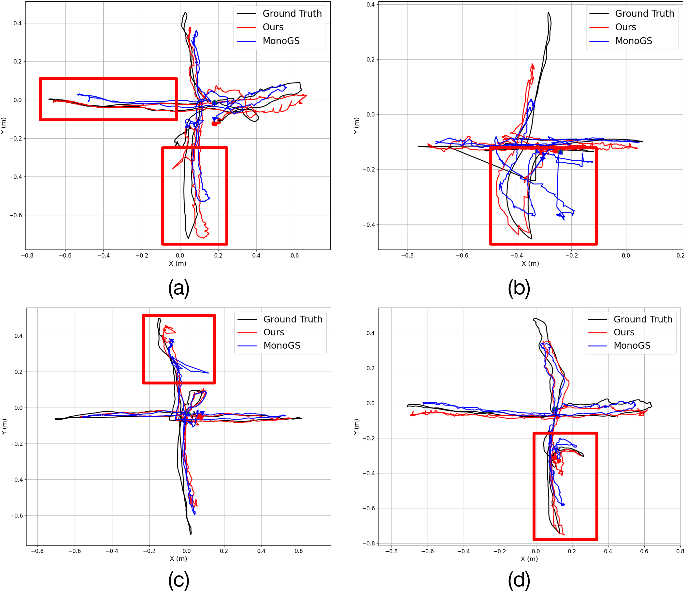
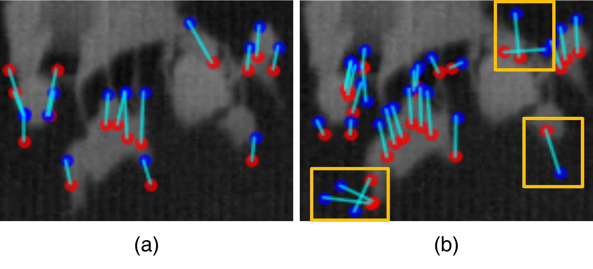
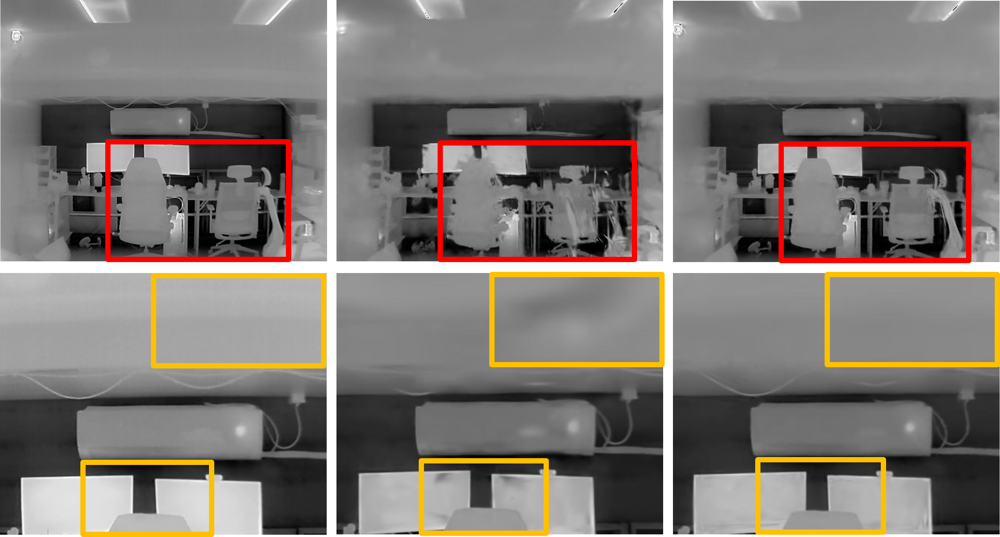

Physics-Informed Edge-Aware Thermal Gaussian Splatting SLAM
The thermal-depth 3D Gaussian Splatting SLAM framework
1 Gwangju Institute of Science and Technology (GIST) 2 Ajou University
* First author · † Corresponding author
Conventional SLAM systems that rely on photometric alignment or point features often fail in the texture-sparse, low-contrast imagery produced by thermal cameras. We present PI-EAT-SLAM (Physics-Informed Edge-Aware Thermal Gaussian Splatting SLAM), the first thermal-depth 3D Gaussian Splatting SLAM framework. Instead of depending on raw photometric intensity, our approach exploits robust geometric edge features to achieve reliable tracking and mapping in visually degraded environments. A Stefan-Boltzmann law-based rescaling module physically enhances thermal contrast without amplifying noise; a multi-stage Gradient-aware Edge-KLT (GE-KLT) tracker establishes highly reliable correspondences via dual-constraint outlier rejection; and an edge-aware smoothness loss preserves sharp thermal boundaries during mapping. Extensive experiments on public and custom datasets show that PI-EAT-SLAM achieves superior tracking accuracy and highly competitive novel-view synthesis compared to state-of-the-art baselines.
Stefan-Boltzmann radiance rescaling (L ∝ T⁴) restores true thermal contrast while suppressing sensor noise.
GE-KLT couples KLT with Canny edges under spatial + gradient-directional dual-constraint outlier rejection.
An edge-aware smoothness loss enforces thermal equilibrium while preserving sharp boundaries in dense 3DGS.

Raw 14/16-bit thermal data must be compressed to 8 bits for tracking. Conventional min-max scaling loses critical thermal detail and contrast. We instead convert raw intensities to an absolute temperature map and apply the Stefan-Boltzmann law to obtain surface radiance, which is proportional to the fourth power of temperature. This non-linear mapping amplifies subtle but physically meaningful temperature variations far better than linear scaling — yielding sharper, less noisy 8-bit images. CLAHE and bilateral filtering then sharpen local detail while attenuating noise.

Pure photometric alignment is fragile in thermal imagery. Our multi-stage matching pipeline combines KLT tracking (local patch appearance) with high-confidence Canny edges through three sequential outlier-rejection stages: (1) distance-based filtering, (2) dual-constraint matching that requires both spatial proximity and gradient-directional agreement, and (3) residual-based rejection. This strictly anchors matches to true physical boundaries, dramatically improving pose-estimation robustness in contrast-limited scenes.

Standard smoothness losses oversmooth important geometric boundaries. Our edge-aware smoothness loss applies strong smoothing in flat regions while strictly preserving sharp thermal discontinuities, enforcing natural thermal equilibrium. A sigmoid-weighted edge term down-weights regularization exactly where strong radiance gradients occur, so the final 3DGS map stays crisp at object boundaries and clean in homogeneous regions.

| Sequence | ORB2 (RGB-D) | ORB2 (Thermal-D) | MonoGS (Thermal-D) | Thermal-D Odom | Ours |
|---|---|---|---|---|---|
| Bright | |||||
| ds1-xyz | 0.0119 | 0.0832 | 0.0641 | 0.0719 | 0.0541 |
| ds1-xyz-ps | 0.0402 | 0.1412 | 0.0419 | 0.0154 | 0.0314 |
| ds1-hfsp | 0.1061 | 0.4416 | 0.0959 | 0.0582 | 0.0485 |
| ds2-xyz | 0.0618 | Fail | Fail | 0.0375 | 0.0865 |
| ds2-hfsp | 0.0759 | 0.1525 | 0.1536 | 0.0288 | 0.1435 |
| Varying (illumination changes) | |||||
| ds1-xyz-ic | Fail | 0.2502 | 0.0815 | 0.1151 | 0.0553 |
| ds1-xyz-ic-ps | Fail | 0.3490 | 0.0609 | 0.0778 | 0.0520 |
| ds1-hfsp-ic | Fail | 0.4674 | 0.0797 | 0.0514 | 0.0452 |
| ds2-xyz-ic | Fail | 0.2032 | 0.1705 | 0.1136 | 0.0840 |
| ds2-hfsp-ic | Fail | 0.1889 | 0.0988 | 0.1099 | 0.0626 |


| Method | Metric | Easy | Difficult | ||||
|---|---|---|---|---|---|---|---|
| xyz | sfm | circle | upper_turn | down_turn | up_down | ||
| MonoGS | PSNR ↑ | 25.54 | 27.22 | 21.81 | 15.31 | 11.36 | 12.66 |
| SSIM ↑ | 0.941 | 0.943 | 0.876 | 0.528 | 0.268 | 0.284 | |
| LPIPS ↓ | 0.179 | 0.145 | 0.207 | 0.540 | 0.690 | 0.656 | |
| HI-SLAM2 | PSNR ↑ | 23.66 | 24.41 | 22.36 | 19.43 | 18.54 | 20.10 |
| SSIM ↑ | 0.916 | 0.895 | 0.885 | 0.855 | 0.846 | 0.865 | |
| LPIPS ↓ | 0.193 | 0.196 | 0.207 | 0.464 | 0.467 | 0.400 | |
| Ours (Mono) | PSNR ↑ | 25.42 | 27.29 | 23.73 | 20.82 | 11.85 | 15.26 |
| SSIM ↑ | 0.944 | 0.944 | 0.920 | 0.870 | 0.326 | 0.436 | |
| LPIPS ↓ | 0.168 | 0.141 | 0.158 | 0.378 | 0.661 | 0.574 | |
@inproceedings{pieatslam2026, title = {PI-EAT-SLAM: Physics-Informed Edge-Aware Thermal Gaussian Splatting SLAM}, author = {Kim, Junpyo and Yeom, Seonwook and Yang, Seonmo and Ham, Jungil and Shin, Hyeonji and Kim, Changhyeon and Lee, Hyeonbeom and Kim, Pyojin}, booktitle = {IEEE/RSJ International Conference on Intelligent Robots and Systems (IROS)}, year = {2026} }